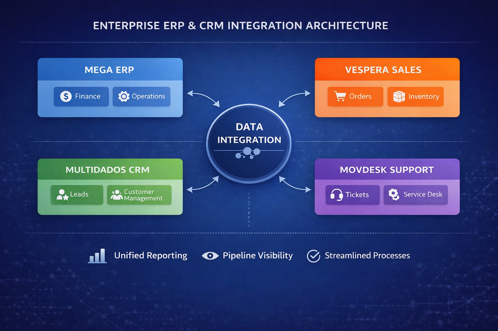
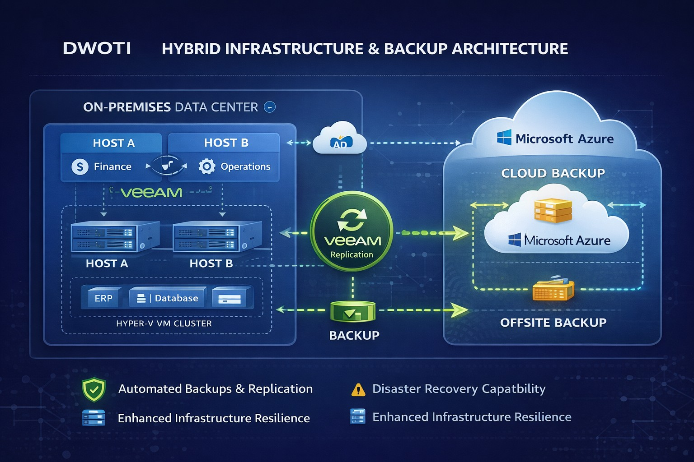
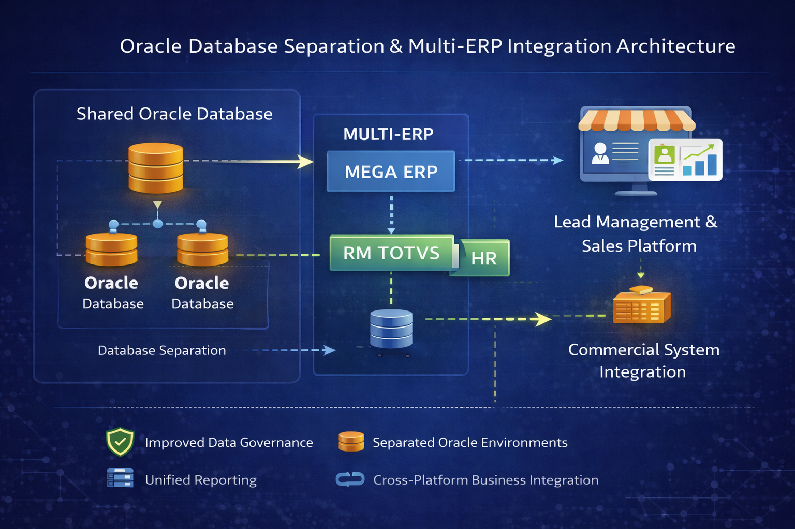

Dulcionor Willian de Oliveira
Microsoft Infrastructure | ERP & Business Systems | IT Governance
About
Hands-on IT infrastructure professional with 20+ years of experience designing, supporting, and modernizing Microsoft environments. Specialized in Windows Server, Active Directory, Microsoft 365, Hyper-V, Veeam, Fortinet, backup, disaster recovery, and hybrid infrastructure. Complementary experience leading ERP, CRM, and business systems implementations, rationalizing application portfolios, accelerating delivery, and reducing unnecessary technology costs.
Professional Experience
Mechanical Assembly Technician
- Work in a safety- and quality-driven Canadian production environment requiring accurate documentation and technical troubleshooting.
- Continue hands-on Microsoft infrastructure development through Windows Server, Azure hybrid, PowerShell and backup/recovery labs.
IT Support Analyst / Systems Support
- Administered Windows Server, Active Directory, DNS, DHCP, Group Policy and Microsoft 365 for multi-site operations.
- Led improvements across virtualization, networking, backup, disaster recovery, security and application availability.
- Coordinated vendors and infrastructure projects while translating operational requirements into reliable solutions.
IT Infrastructure & Support Specialist
- Designed and supported Windows Server, Active Directory, Microsoft 365 and Hyper-V environments for SMB clients.
- Configured Fortinet firewalls, VPNs, site connectivity, DNS, DHCP and secure remote access.
- Implemented Veeam backup, recovery testing, infrastructure upgrades and cloud-connected recovery services.
Infrastructure, ERP & Systems Projects
Windows Server 2025 Hybrid Administration Lab
Purpose: Maintain current enterprise Microsoft infrastructure skills through a documented lab environment.
- Deployed redundant AD DS and DNS, DHCP, DFS and Windows file services.
- Configured AD CS/PKI, certificate auto-enrollment, Windows Admin Center and WinRM over HTTPS.
- Built Hyper-V networking, NAT, PowerShell administration and Veeam backup workflows.
- Prepared the environment for Entra ID, Azure hybrid administration and automation development.
ERP & Business Systems Transformation
Role: ERP & Business Systems Specialist | IT Project Manager

- Led the implementation of Mega Sistemas ERP across financial and operational modules, aligning technology with business processes.
- Integrated Vespera commercial platform and Multidados CRM.
- Mapped requirements and structured data integration between sales, finance, and operations.
- Rationalized overlapping tools and workflows to reduce avoidable licensing, support effort, and implementation friction.
Business Impact: Reduced manual work and unnecessary tool overlap, accelerated adoption, strengthened governance, and simplified cross-department support.
Hybrid Infrastructure & Disaster Recovery Architecture
Role: Infrastructure Architect

- Designed dual physical host architecture with Veeam replication.
- Implemented Hyper-V virtualization for ERP and database environments.
- Built structured backup strategy with Azure offsite replication.
- Recovered business-critical services in under 24 hours following a ransomware incident.
Business Impact: Established business continuity framework, reduced downtime risk, and increased infrastructure reliability.
Database Oracle Separation & Multi-ERP Integration
Role: ERP & Business Systems Specialist | IT Project Manager

- Led separation of shared Oracle databases to improve scalability and governance.
- Implemented Mega ERP and RM Totvs (HR system).
- Managed the cross-functional IT team, vendors, requirements, risks, and rollout governance during the transformation.
- Standardized integration and ownership practices to reduce duplicated effort and long-term support costs.
Business Impact: Increased data governance, improved sales integration, and enhanced enterprise system scalability.